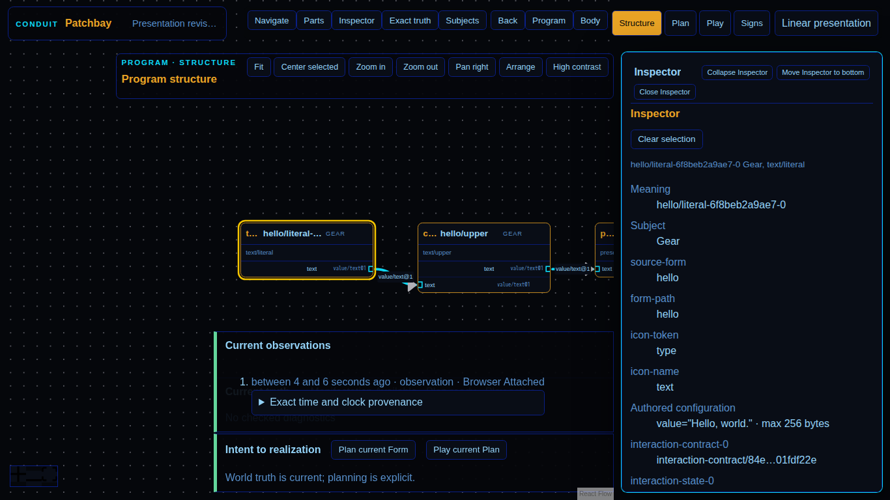

Documentary evidence captured only after semantic assertions passed.

browser-hostprove.browser-host72460bbdc5626d587726d7bb85bf55f94a54bba7patchbay-html.selected-gear@1Screenshotimage/png122058chromium151.0.7922.341366x7687e9a0d84c2ddffdb872c9f290f23b6943435df56b198fa2f9c7d74de17a0903184c67a3855f8a1d6c1dd77b933442a555db24474c16163126b289b80fb052d317478060302940a67f8d9ce090d4d00daeea4f0e69acbd056daccc3e3536c34a308776dd4071274a7b7e8dd287b2efc3f95b61983abbf8cc0a5cc3ba7ef88376816152b3f3028f264727c20567b168944f72f0ad5702b9cdd39fe55c66f58d0229patchbay-html/dom-svg@1selection-succeeded-and-inspector-correlated